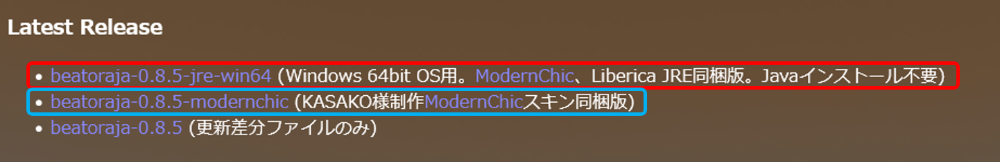
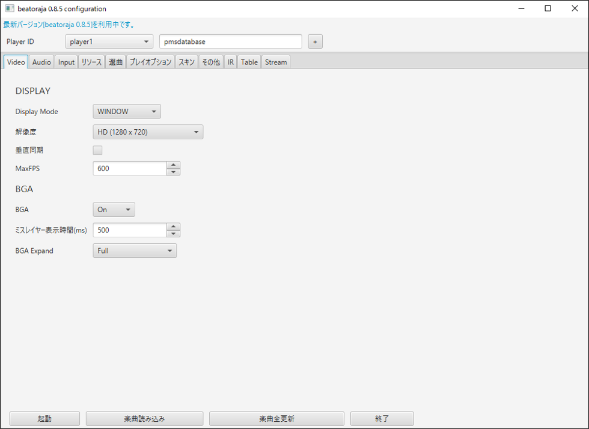
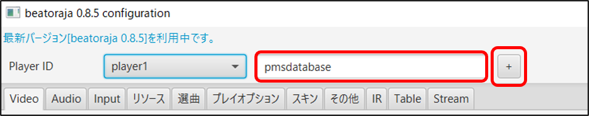
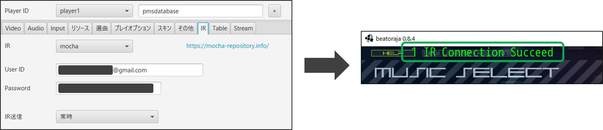
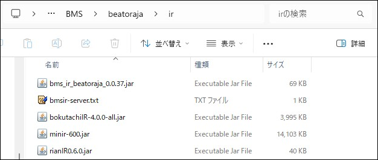
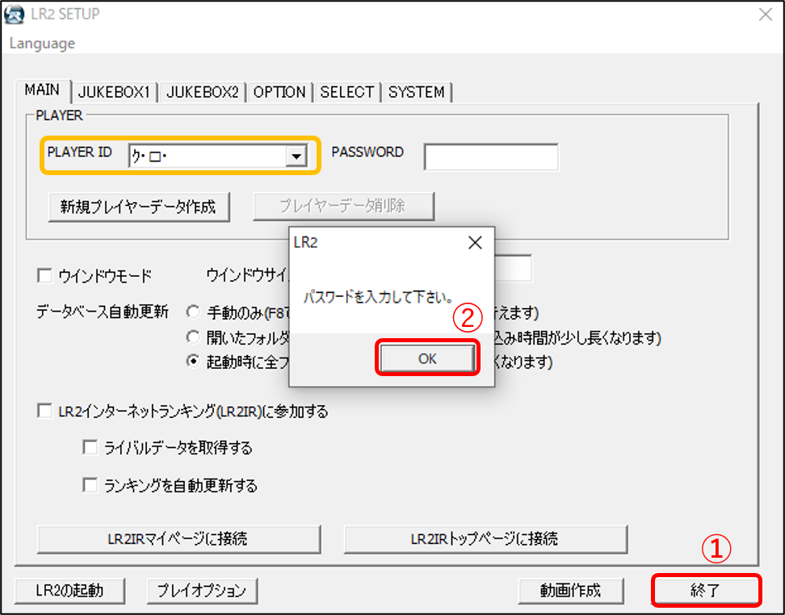
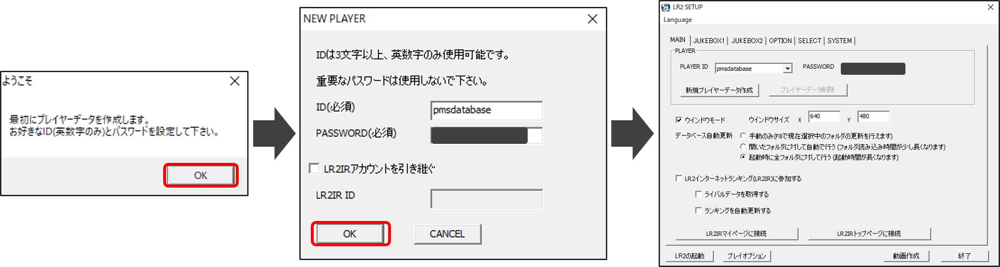
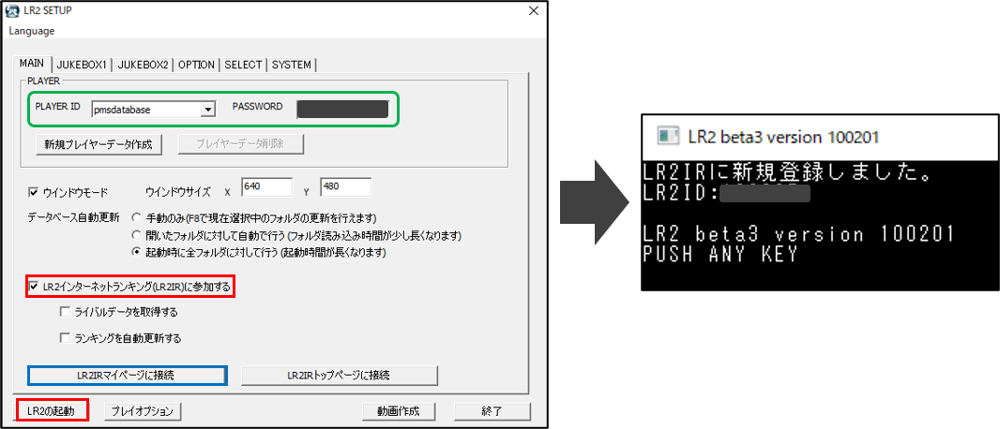

PMSをプレイするための本体プレイヤー (アプリケーション) の導入と、必要な初期設定に関する説明です。
2023年現在、PMS Database は LR2 / beatoraja を本体の対象としており、特にこれから完全新規で始めるという場合は beatoraja を推奨しています。
・ beatoraja
- Download
- beatoraja-configuration について
- アカウント作成・インターネットランキング (Mocha-Repository) の登録
- IR (Mocha-Repository) で出来ること
- 複数のIRへの同時接続を設定する
- プライマリIRについて
- 各IRの簡易的な紹介
・ Lunatic Rave2 (LR2)
- Download
- LR2SETUP について
- 初回設定 ～ LR2 の起動
- インターネットランキング (LR2IR) の登録 (旧記事)
【Download】beatoraja (Mocha-Repository : Download)

基本的には画像赤枠 (JRE同梱版) のパッケージをダウンロードすればOKです。
ただし、Windows のシステムロケールが日本国外の場合(韓国語で報告あり)、オプション選択に不具合が生じる との報告があるため、画像青枠 (Java版) を使用してください。
【2021年版】beatoraja を Windows にインストールする方法【BMS】
時々 beatoraja のアップデートを確認してください。古すぎるバージョンを使用していると、インターネットランキング (後述) に参加できなくなります。
ファイルを解凍したら、 beatoraja.exe をダブルクリック > beatoraja-configuration > 左下の「起動」をクリック。beatoraja が正常に起動するか確認しましょう。
Java 版を使用している場合は、beatoraja-config.bat から起動してください。
beatoraja.exe をダブルクリックすると最初に起動する画面です。ここで beatoraja のあらゆる機能を設定することができます。
以降の記事中で "beatoraja-configuration" と書かれている場合はこの画面での操作を指しますので、覚えておいてください。

beatoraja はインターネットランキング (以下IR) 機能を搭載しており、アカウント作成を行う事で、オンライン上でクリアランプを集計したり ライバル機能を利用することが可能です。
IR登録はPMSをプレイする上で必須の工程ではありませんが、beatoraja の IR は オフラインでのクリアデータを後日反映させることができない場合があることや、IRデータを統計や難易度表の投票に利用するサイトがあることなどから、早い段階で設定しておくことをオススメします。
beatoraja-configuration の画面上部 > Player ID を確認します。"NO NAME" となっている所に自分のプレイヤーネームを入力し、[+] ボタンをクリックしてください。
player1 - プレイヤーネーム の紐付けが取れていればOKです。(2人目以降のデータを作成したい場合は、player2,3,… を選択し、同様の操作を行ってください)

次に、IRへのアカウント連携を行います。IRは複数存在しますが、まずは最もベーシックな "Mocha-Repository" へ登録してみます。
■ Mocha-Repository
- ACCOUNT > Register > E-mail / Player Name / Password を入力し、Register ボタンで送信。あとは送られてくるメールの指示に従ってください。
最後に、作成したアカウントを beatoraja のプレイヤーアカウント紐付けします。
beatoraja-configuration > 自分のプレイヤーネームが表示されている事を確認 > IR を開き、Mocha-Repository の登録に使用した E-mail と Password を入力します。
【注意】User ID 欄には E-mail を入力 してください。プレイヤーネームやプレイヤーIDを入力しても認証されません。
認証が成功していれば、beatoraja を起動したときに左上に "IR Connection Succeed" と表示されます。

・ スコアデータの登録 (オフラインプレイからの後日反映は不可、アシストオプション不可)
・ 楽曲、段位コース、プレイヤー などの検索、URL情報等の追加
・ 自己紹介の登録、取得済段位の反映
・ Level Review の登録
・ Collection 一覧表の登録と利用
・ その他
※IRへの登録にこれ以上の関心がなければ、この項目は飛ばしてもらっても構いません。
-----
先述したとおり、beatoraja 関連のIRは複数存在しており、一度設定を済ませておけば全てのIRにスコアを一斉送信することができます。
設定手順は (2) とほとんど同じですが、各IRで発行される「APIトークン」という拡張子 .jar のファイルを取得し、beatoraja > ir フォルダ内に設置する必要があります。
APIトークンは時おり更新されることがあり、ir フォルダ内に古いバージョンが残っていると接続不良を起こします。定期的に情報を確認してください。

■ beatoraja IRの登録方法・各IR特色 - プライマリIR と セカンダリIR （設定） (外部記事)
2つ以上のIRを登録したとき、beatoraja-configuration > IR タブ内に Set Primary というボタンが現れます。
Set Primary を設定したIR (プライマリIR) では、そのIRのさまざまな独自機能に beatoraja の起動画面内からアクセスすることができます。
プライマリIR は1つだけ設定できます。ひとまず Mocha-Repository を設定しておき、より魅力的なIRが見つかったら乗り換えを検討すると良いかもしれません。
■ MinIR
・Mocha-Repository と同じくベーシックで稼働歴の長いIRです。STELLAVERSE のスコアデータと連携しており、7,14KEYS 方面での定着率が高いです。
・登録方法の解説記事
・beatoraja 0.8.8 (2026/06) 現在、新しくダウンロードした beatoraja 本体であれば、最新版のAPIトークン (minir-600.jar) が既に同梱されています。
・beatoraja の導入時期が一定以上古い (0.8.5 以前？) 場合、古いAPIトークン (minir-440.jar など) が ir フォルダに残存していることがあります。各自で更新してください。
・beatoraja-configration > IR タブの User ID / Password にはそれぞれ MinIR にアカウント作成した際のメールアドレスとパスワードを入力してください。
■ Bokutachi IR
・幅広い音楽ゲームのスコアを収集・分析しているデータベース&コミュニティです。公式 Discord Server は こちら (招待リンクが開きます)
・PMS Database に個別対応して頂いており、9KEYS に限り beatoraja からのスコア送信が可能です。
・登録方法の解説記事 (要ログイン)
・APIトークンは こちら から入手できます。
・beatoraja-configration > IR タブの User ID には登録時のメールアドレスを、Password にはサイト内で発行される APIキー を貼り付けてください。
■ BMS-IR
・LR2IR の代替サーバーを発端として発展した新しいIRで、beatoraja のほか、純正LR2からのスコアデータも送信可能な恐らく唯一のIRです。
・公式 Discord Server (クリックすると招待リンクが開きます) が盛んに動いており、導入に行き詰まった場合は直接質問することもできます。
・登録方法の解説記事 はこちらです。APIトークンは同ページ内で配布されています。
・beatoraja-configration > IR タブの User ID には BMS-IR のアカウント作成時に割り振られたID を、Password には登録時のパスワードを入力してください。
■ rianIR
・2026/06 現在紹介している中では最も新しいIRです。beatoraja ほか複数の本体プレイヤーに対応しており、既存IRの長所を兼ね備えたような機能美が見られます。
・登録方法の解説記事 はこちら。APIトークンは同ページ内で配布されています。
・beatoraja-configration > IR タブの User ID には rianIR 登録時の (※メールアドレスではなく) ユーザーID を、Password には登録時のパスワードを入力してください。
-----
以下のIRは、2026/06 現在、サービス終了となっています。
■ CinnamonIR
■ CitrusIR
【Download】Lunatic Rave 2 (Internet Archive)
【注意】LR2 は本体の再配布が禁止されており、2026/05/31 の LR2IR 閉鎖に伴い、正規の入手経路は事実上ほぼ失われました。当サイトでは、既存プレイヤーによる環境維持や BMSeeker をはじめとする LR2 連携ツールの需要を考慮し、参考情報として Internet Archive 上の保存ページを案内していますが、本体の再配布を推奨する意図はありません。
既存プレイヤーの方ないし連携ツールの利用等の個人的な目的でない限り、beatoraja の導入を改めてお願いいたします。
-----
上記リンクから入手した LR2_100201.zip を解凍したら、LR2beta3 フォルダ内の LR2.exe をダブルクリック。LR2SETUP 画面が立ち上がります。
LR2.exe をダブルクリックすると (初回起動以降) 最初に起動する画面です。ここで LR2 のあらゆる機能を設定することができます。
以降の記事中で "LR2SETUP" と書かれている場合はこの画面での操作を指しますので、覚えておいてください。
2023/06 現在配布されている LR2 は、初回起動時の動作が少しおかしくなっている場合があります。
下図のように LR2SETUP > MAIN > PLAYER ID が文字化けしている場合、何も設定せずに [終了] > エラーを無視して [OK] と押した後、LR2.exe を再起動 してください。

正常に起動した場合、LR2SETUP 画面に入る前にアカウント作成を求められます。ID / PASSWORD (半角英数字のみ) を記入して [OK] をクリックしてください。

2026/05/31 LR2IR の閉鎖に伴い、インターネットランキング機能は利用不可能になりました。従って、この項目は読み飛ばして頂いてOKです。
今後とも LR2 でランキング機能を利用したい場合は BMS-IR が非公式の代替サーバーとして機能していますので、そちらのマニュアルをご参照ください。
■ LR2 internet ranking (LR2IR)
----------
LR2IR の場合は会員登録等は必要なく、PLAYER ID を選択 > LR2SETUP > LR2インターネットランキングに参加する にチェック した状態で LR2 を起動すると 自動的にアカウント作成が行われます。オンライン接続状態で 1曲以上スコアを残してから LR2SETUP > [LR2マイページに接続] をクリックすると、LR2IR にログイン出来るようになります。

・ スコアデータの登録 (オフラインプレイからの後日反映が可能、アシストオプション一部反映可能)
・ 楽曲、段位コース、プレイヤー などの検索、URL情報等の追加
・ プレイ履歴の全数確認
・ 自己紹介の登録、情報の公開/非公開設定
・ ラウンジの利用
・ その他